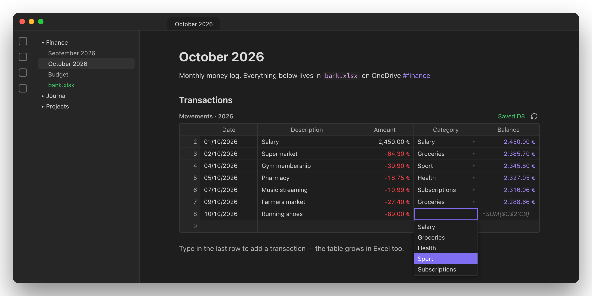
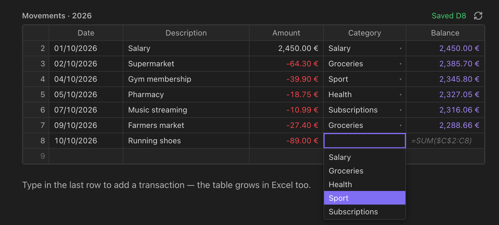
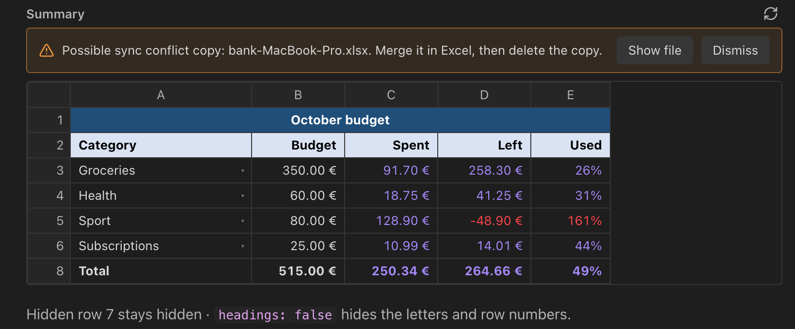

Obxcel shows Excel tables and sheets right inside Obsidian, and every edit you make is saved straight back into the .xlsx file. No exports, no copies, no sync scripts.
Free & open source (MIT) · Desktop: macOS, Windows, Linux

Point a code block at a workbook. Obxcel draws it in the note and writes your changes back to the file.
Add an obxcel code block with the file and the table (or sheet) you want.
```obxcel file: onedrive:/bank.xlsx table: Movements ```
Values, dates and currencies appear formatted exactly as Excel shows them.
Click a cell and type. Enter moves down, Tab moves right. The .xlsx is updated instantly.

Made for the lists you add to every day, like transactions, workouts and reading logs.

Summaries, budgets and dashboards keep the layout you built in Excel.
[Red]cols=[B,C,D]Obxcel reads the workbook itself, not an export, so the rules you set in Excel work in Obsidian too.
List rules become menus. Number, date and length rules are checked, and "Stop" rules block wrong values just like Excel.
Write onedrive:/Finance/bank.xlsx and every computer finds its own OneDrive folder. Conflict copies are flagged.
Saved the file in Excel, or synced it from another device? The note refreshes on its own.
Type -12,50, 03/10/2026 or =SUM(B2:B9). Numbers, dates and formulas are recognised and keep the cell's format.
Inside the vault (./Sheets/bank.xlsx), in your home folder, on another drive, or in OneDrive.
Show the transactions table in a monthly note and the budget sheet on your dashboard. All of them stay in sync.
Obxcel doesn't re-create your file through a spreadsheet library. It edits only the cells you change and leaves everything else exactly as it was.
Charts, pivot tables, other sheets and formatting are kept byte for byte.
The first save of each session keeps a copy of the original next to the file.
Each save is written aside and swapped in at once, so a crash can't corrupt the workbook.
The file is re-read right before each save, so changes made in Excel meanwhile aren't lost.
Write them as key: value or key=value, one per line.
| Option | What it does |
|---|---|
file | The workbook. Required. |
table | An Excel table, by name. Fits the note's width. |
sheet | A sheet, by name or position. Shown at Excel's widths. |
range | Part of a sheet: A1:F40, or A1:F for "to the last row". |
cols | Only these columns, in this order: [B, C, D] or [B:D, F]. |
headings | false hides column letters and row numbers. |
| file: accepts | Resolved from |
|---|---|
./Sheets/bank.xlsx | The note's folder |
Sheets/bank.xlsx | The vault root |
~/Documents/bank.xlsx | Your home folder |
/Users/me/bank.xlsx | Anywhere on the computer |
onedrive:/Finance/bank.xlsx | This device's OneDrive folder |
The easiest way, with automatic updates.
For trying a specific version.
main.js, manifest.json and styles.css from the latest release<vault>/.obsidian/plugins/obxcel/Obxcel reads files on your computer, so it isn't available on Obsidian mobile.
Formulas are recalculated the next time Excel opens the file. New formulas show greyed out until then.
Close the file in Excel while editing in Obsidian. Obxcel warns you if it's open.
Write =SUM(A1,A2): that's how .xlsx files store them. Excel shows them in your language.